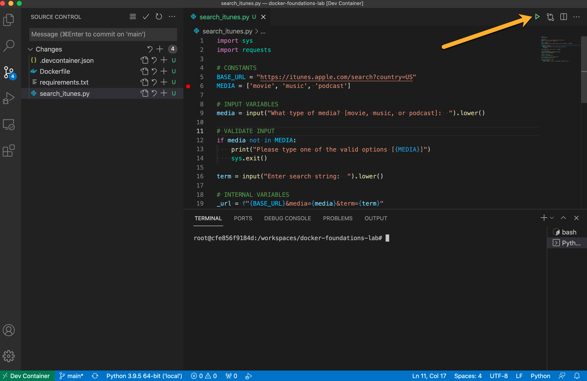

Visual Studio Code Development Environment Review
The goal of this walk-through was to expose you to the integrations with simple examples. The section validates the environment is ready for use.
Python Integration
In this section you will create a simple Python script to retreive search results from iTunes. You are looking to validate the Python functionality within the Visual Studio Code Editor.
 Don't worry, you don't have to know any python at this point...
Don't worry, you don't have to know any python at this point...
- CREATE a file named
search_itunes.py -
PASTE the Python code below
import sys import requests # CONSTANTS BASE_URL = "https://itunes.apple.com/search?country=US" MEDIA = ['movie', 'music', 'podcast'] # INPUT VARIABLES media = input("What type of media? [movie, music, or podcast]: ").lower() # VALIDATE INPUT if media not in MEDIA: print("Please type one of the valid options [{MEDIA}]") sys.exit() term = input("Enter search string: ").lower() # INTERNAL VARIABLES _url = f"{BASE_URL}&media={media}&term={term}" _session = requests.session() # MAKE REST API CALL results = _session.get(_url) # EXTRACT RESULT DATA FROM RESONSE OBJECT data = results.json()['results'] # LOOP OVER RESULTS AND PRINT for result in data: print(f"{result['trackName']:<50}{result['releaseDate']:>50}") -
SAVE the file
-
CLICK the green play button

-
ANSWER the prompts
-
REVIEW the results
The presence of the green play button indicates the Python extension is working.
You can also see the Python Debugger on the left, the 4th icon down.